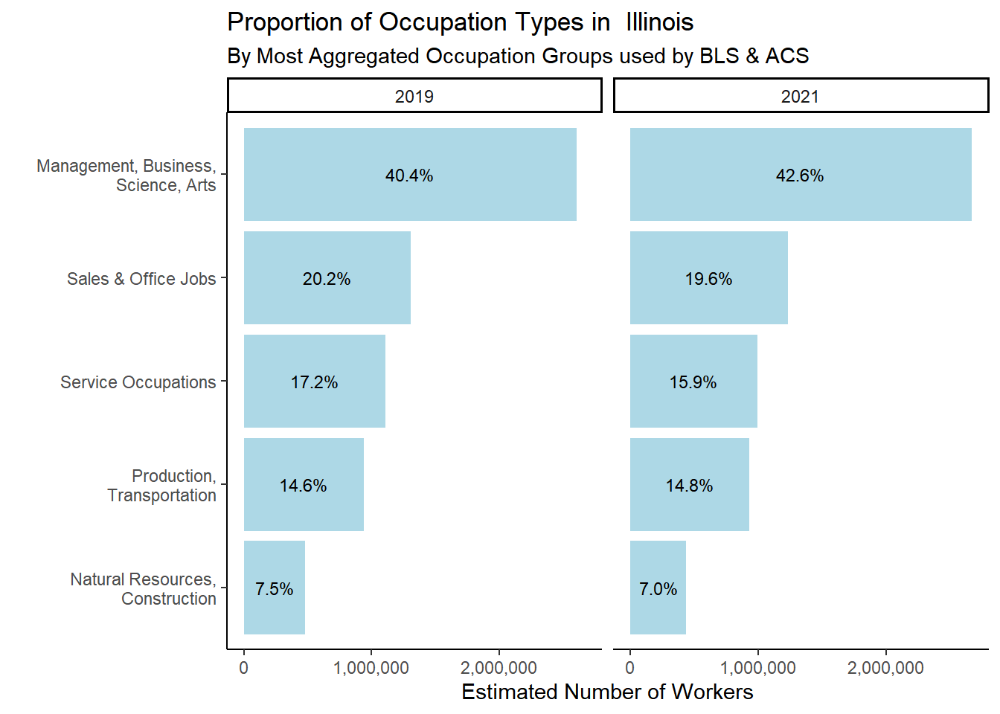
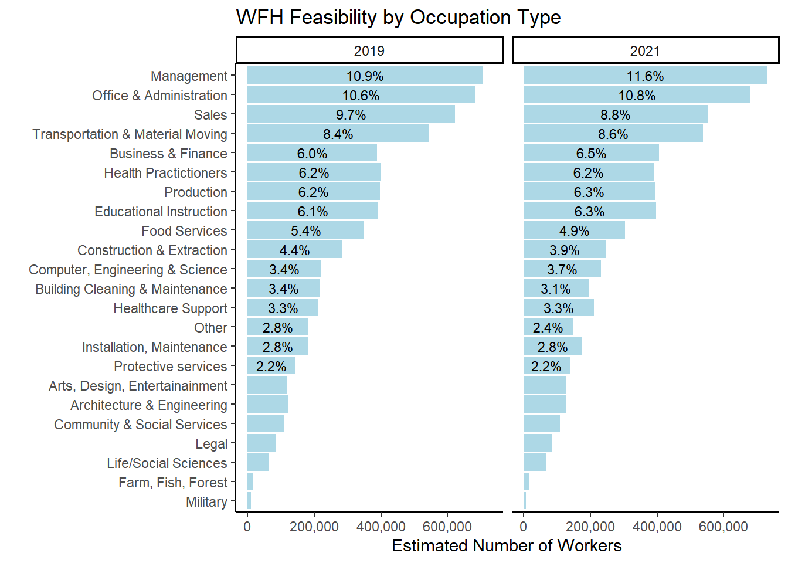
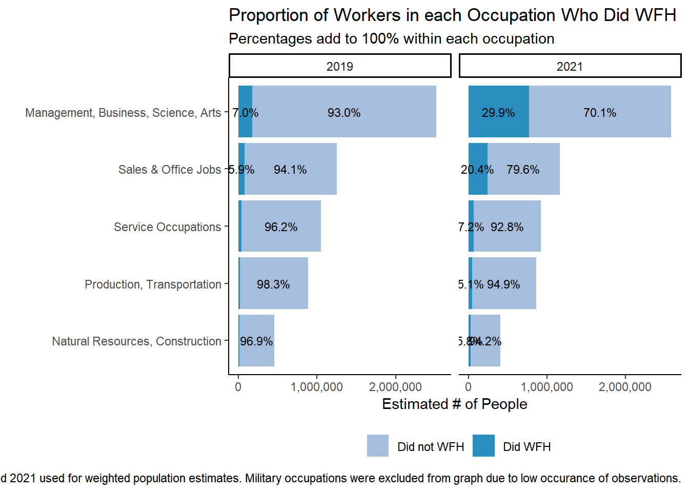
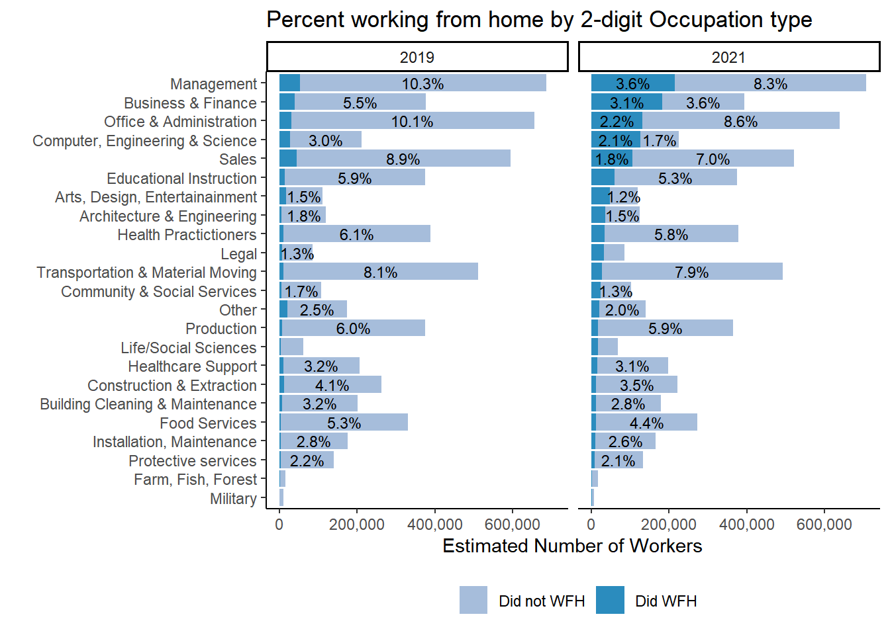
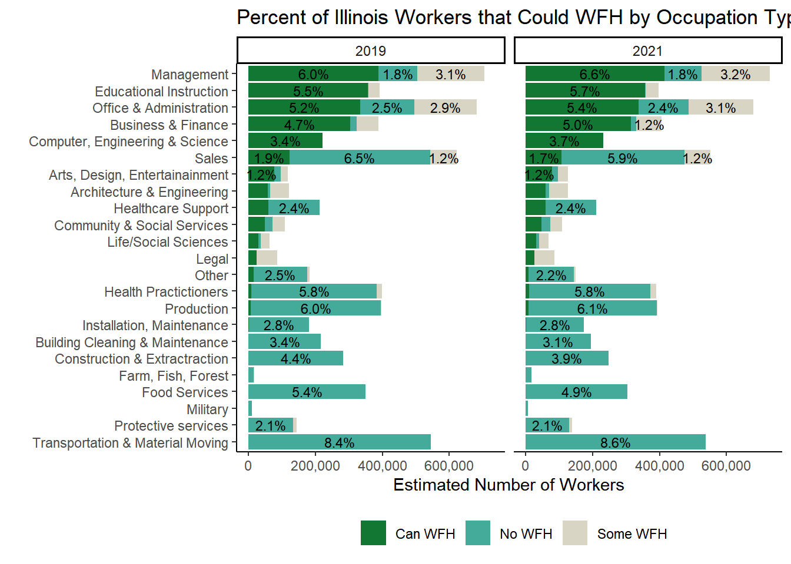
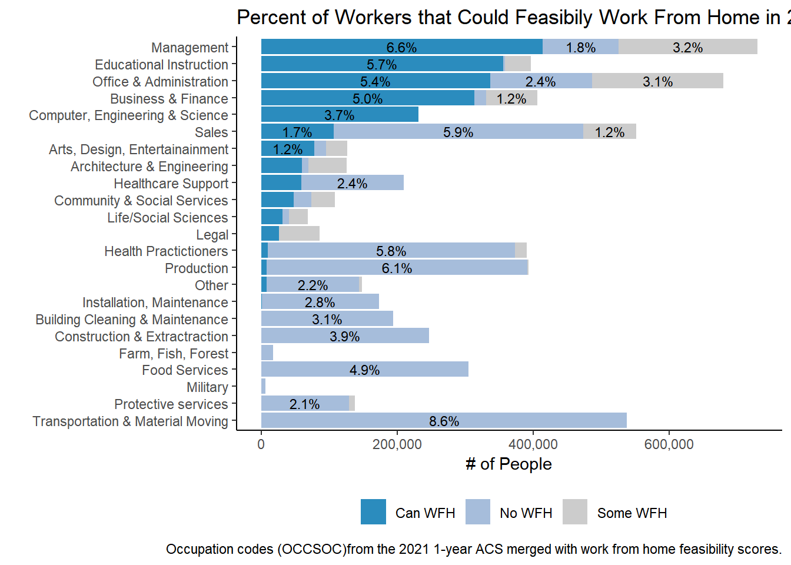
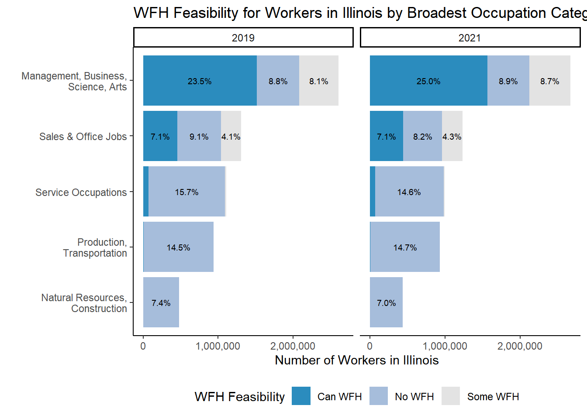

library(scales)
library(reldist)
library(pollster)
library(labelled)
library(weights)
library(tigris)
library(ipumsr)
library(srvyr)
library(survey)
library(tidyverse)
library(naniar)
library(gmodels)
library(gtsummary)
library(quarto)
library(huxtable) # for summ() and regression output formatting
library(jtools)
library(modelsummary)
library(car)
knitr::opts_chunk$set(warning=FALSE, message=FALSE)
load("./data/WFH.RData")6 Appendix 1. Detailed Methodology
This section explains how the constructs of “WFH Feasibility” and “WFH Occurrence” were derived in greater detail. All data, replication code, and additional graphs can be found on Github at Alea Wilbur-Mujtaba’s WorkFromHome Project.
6.1 Construct: Work from Home Feasibility
WFH Feasibility is based on the methodology used by Dingel & Neiman’s (2020) working paper that assessed WFH feasibility in the USA and other countries during the early stages of the COVID-19 pandemic. Dingel and Neiman first classify the WFH feasibility for all occupations in the United States using survey responses from the Occupational Information Network (ONET). ONET is an online database sponsored by the US Department of Labor and provides detailed information on types of job in the United States. Two ONET surveys on Work Context and Generalized Work Activities were used to approximate if an occupation must be performed on site or if it could feasibly be done at the worker’s home. For example, some questions implied that a physical presence at the work site was expected in order to do the job; others implied working closely with other individuals. Dingel & Nieman used these survey questions as a proxy for which occupations could feasibly be done at home and which could not. Please see Dingel & Neiman’s (2020) section on “Classification of Occupations” for more details on survey questions used to assign “teleworkable” scores to occupation codes. The authors created a publicly available file with 968 ONET occupations with their assigned value of 0 (WFH not feasible) or 1 (WFH is feasible) to indicate an occupation’s WFH feasibility.
Occupations in ONET are given an 8-digit, detailed version of the Standard Occupational Classification (SOC) system structure. The ACS and Bureau of Labor Statistics use a 6-digit version of the SOC-based 2018 occupation codes. As can be seen in Figure 1, there are cases in which multiple ONET occupations map to a single occupation code used by the ACS. For these codes, we average the feasibility scores of the 8-digit O*NET occupations to create a 6-digit occupation code that matches the ones used by the ACS. This creates values ranging from 0 to 1; values between 0 and 1 were labeled as “Some WFH feasible” to indicate that some occupations feasibly could be done at home and others could not. Those occupations can be grouped into 23 major groups using the first 2 digits of their occupation code.
6.2 Expanded Work from Home Feasibility Codes
When merging Dingel and Neiman's file of occupation codes with ACS occupation codes, there were many unmatched occupations which limited the sample size of respondents that had occupation data at the individual level. Some unmatched values were due to new SOC codes that began to be used in 2018, others were due to the ACS data aggregating to 4-digit SOC codes (e.g. 5140XX) to protect respondent anonymity in occupations with few workers. In order to better assess one's ability to work at home based on their job requirements, we added additional occupation codes and teleworkable scores to Dingel and Neiman's WFH feasibility classification and then merged the updated classifications with the Illinois ACS data.
Occupation codes for Illinois workers that did not match were identified and manually given "teleworkable" codes based on similar occupation codes and job title or O*NET survey responses (as was done for Dingel & Neiman's original teleworkable scores). Additional occupation codes not included in Dingel & Neiman's coded occupations were also added by comparing the most recent list of current and past occupation codes according to 2018 Standard Occupational Classification (SOC) for 2018-onward and identifying occupation codes that had changed.[1] Using only the codes provided by Dingel & Neiman resulted in 331 unique occupation codes matching for 31,563 observations. Our expanded occupation codes resulted in 520 unique occupation codes matching 61,234 observations.
6.3 Construct: Worked from Home
Our main analysis is performed at the individual level using IPUMS USA (Integrated Public Use Microdata Series) data from 2019 and 2021 American Community Surveys (ACS) for all Illinois residents. Summaries calculated using individual level data were compared to ACS Detailed Summary Tables when possible during the analysis as intermediate robustness checks. The summary level ACS data closely align with the individual level ACS data on WFH.
In 2021, there were 58,085 observations representing a 5,972,987 person workforce aged 16 and above. In 2019, there were 59,979 observations representing a 6,213,391 person workforce in Illinois. The ACS asks individuals how they got to work in the last week with an option for "Worked from home," represented by the TRANWORK variable. Responses are weighted by PERWT. "did_wfh" is recoded form of TRANWORK transformed into a binary variable indicating whether someone did or did not work from home.
The ACS asks respondents about their primary means of transportation to work through a variable tranwork.[1] We use this variable as the proxy to indicate whether respondents have actually worked from home by creating did_WFH by recoding all forms of transportation as 0 and responses where an individual worked from home as 1.
Table 4 below shows summary statistics for variable tranwork. We use the weighting variable perwt to obtain the population-level estimate. Before the pandemic, individuals that worked from home made up 5.3% of Illinois' labor force; after COVID-19 individuals that worked from home increased to 19.2% of the labor force.
[1] According to IPUMS ACS, tranwork reports a respondent’s primary means of transportation to work on the most recent day worked or over the course of the previous week. See Appendix 3 for the question design.
https://usa.ipums.org/usa-action/variables/TRANWORK#description_section
#Tables for Appendix Items with counts of observations by OCC types:
all_occs <- joined %>%
filter(YEAR == 2021)%>%
group_by(OCCSOC) %>%
summarize(count_matched = n(),
weighted_estimate = sum(PERWT)) %>%
mutate(perc_responses = scales::percent(count_matched/sum(count_matched)),
perc_workforce =scales::percent(weighted_estimate/sum(weighted_estimate)))
occs_23cat <-joined %>%
filter(YEAR == 2021)%>%
dplyr::group_by(occ_2digits,occ_2dig_labels_d) %>%
dplyr::summarize(
count_matched = n(),
weighted_estimate = sum(PERWT),
avg_teleworkable = mean(teleworkable)) %>%
ungroup() %>%
mutate(perc_responses = count_matched/sum(count_matched),
perc_workforce = weighted_estimate/sum(weighted_estimate)) %>% arrange(-count_matched)
occ_5cat <- joined %>%
filter(YEAR == 2021)%>%
dplyr::group_by(occ_2dig_labels) %>%
dplyr::summarize(
count_matched = n(),
weighted_estimate = sum(PERWT),
avg_teleworkable = mean(teleworkable)) %>%
ungroup() %>%
mutate(perc_responses = count_matched/sum(count_matched),
perc_workforce = weighted_estimate/sum(weighted_estimate)) %>% arrange(-count_matched)
#install.packages("openxlsx")
library(openxlsx)
dataset_names <- list('All Matched OCC Codes' = all_occs,
'5 Broadest OCC Groups' = occ_5cat,
'OCC 2-digit Groups'= occs_23cat
)
write.xlsx(dataset_names, file = 'WFH_feasibility_comparison_AWM.xlsx')7 Appendix Item 2
7.1 Occupations
Combined into 6 major occupation groups. Broadest categories are made up of multiple 2-digit OCCSOC codes.
Code
#table includes observations from BOTH years.
#table(joined$occ_2dig_labels, joined$did_wfh_labels)
#table(joined$occ_2digits)
crosstab_3way(joined, YEAR, occ_2dig_labels, did_wfh_labels, weight = PERWT)| YEAR | did_wfh_labels | Management, Business, Science, Arts | Military | Natural Resources, Construction | Production, Transportation | Sales & Office Jobs | Service Occupations | n |
| 2019 | Did not WFH | 40.1 | 0.16 | 7.49 | 14.9 | 20.1 | 17.3 | 5.85e+06 |
| 2019 | Did WFH | 55.3 | 0 | 4.34 | 4.72 | 23.1 | 12.6 | 3.18e+05 |
| 2021 | Did not WFH | 37.8 | 0.126 | 7.97 | 17 | 19.3 | 17.8 | 4.79e+06 |
| 2021 | Did WFH | 67.5 | 0.0353 | 2.05 | 3.82 | 20.8 | 5.79 | 1.14e+06 |
ACS 1 year samples for 2019 and 2021 used for weighted population estimates. Military occupations make up less than 0.5% of the labor force and were removed from the graph. Occupation categories are based on broadest aggregated BLS categories used by the BLS.
Code
table <- svytable(~YEAR+occ_2dig_labels, design = dstrata)
table <- table %>%
as_tibble() %>%
group_by(YEAR)%>%
mutate(Prop =round(n/sum(n), digits=3)) %>%
arrange(-n)
table# A tibble: 12 × 4
# Groups: YEAR [2]
YEAR occ_2dig_labels n Prop
<chr> <chr> <dbl> <dbl>
1 2021 Management, Business, Science, Arts 2669727 0.426
2 2019 Management, Business, Science, Arts 2600898 0.404
3 2019 Sales & Office Jobs 1304154 0.202
4 2021 Sales & Office Jobs 1231560 0.196
5 2019 Service Occupations 1105687 0.172
6 2021 Service Occupations 994590 0.159
7 2019 Production, Transportation 941690 0.146
8 2021 Production, Transportation 930840 0.148
9 2019 Natural Resources, Construction 480058 0.075
10 2021 Natural Resources, Construction 437849 0.07
11 2019 Military 9567 0.001
12 2021 Military 6449 0.001Code
table %>% filter(occ_2dig_labels != "Military") %>% ggplot(aes(x=fct_rev(fct_inorder(occ_2dig_labels)), y=n, group = YEAR)) +
geom_col(stat = "identity", fill="lightblue") +
facet_wrap(~YEAR)+
geom_text(aes(label = scales::percent(as.numeric(ifelse(Prop>0.02,Prop, "")), accuracy = .1),accuracy = .1L ),position = position_stack(vjust=.5), size=3) +
theme_classic() + theme(legend.position = "bottom", legend.title = element_blank())+
labs(
title ="Proportion of Occupation Types in Illinois",
subtitle = "By Most Aggregated Occupation Groups used by BLS & ACS",
x = "", y = "Estimated Number of Workers")+
scale_y_continuous(labels = scales::comma)+
scale_x_discrete(labels = function(x) str_wrap(x, width=25))+ # makes labels better on axsis
coord_flip()
ACS 1 year samples for 2019 and 2021 used for weighted population estimates. Military occupations make up less than 0.5% of the labor force and were removed from the graph. Occupation categories are based on broadest aggregated BLS categories used by the BLS.
### Proportion of All Workers in each Occupation Type ###
table <- svytable(~YEAR+occ_2dig_labels_d, design = dstrata)
table <- table %>%
as_tibble() %>%
group_by(YEAR)%>%
mutate(Prop =round(n/sum(n), digits=3)) %>%
arrange(-n)
table# A tibble: 46 × 4
# Groups: YEAR [2]
YEAR occ_2dig_labels_d n Prop
<chr> <chr> <dbl> <dbl>
1 2021 Management 729581 0.116
2 2019 Management 705246 0.109
3 2019 Office & Administration 681575 0.106
4 2021 Office & Administration 679814 0.108
5 2019 Sales 622579 0.097
6 2021 Sales 551746 0.088
7 2019 Transportation & Material Moving 544305 0.084
8 2021 Transportation & Material Moving 537926 0.086
9 2021 Business & Finance 405917 0.065
10 2019 Health Practictioners 399346 0.062
# ℹ 36 more rowstable %>% ggplot(aes(x=fct_rev(fct_inorder(occ_2dig_labels_d)), y=n, group = YEAR)) +
geom_col(stat = "identity", fill="lightblue") +
facet_wrap(~YEAR)+
geom_text(aes(label = scales::percent(as.numeric(ifelse(Prop>0.02,Prop, "")), accuracy = .1),accuracy = .1L ),position = position_stack(vjust=.5), size=3) +
theme_classic() + theme(legend.position = "bottom", legend.title = element_blank())+
labs(title ="WFH Feasibility by Occupation Type",
#subtitle = "Little change between 2019 and 2021 Occurred",
x = "", y = "Estimated Number of Workers") + scale_y_continuous(labels = scales::comma)+
coord_flip()
### Percent of Workers working from home within each Broad Occupation type ###
table <- svytable(~YEAR+did_wfh_labels+occ_2dig_labels, design = dstrata)
table <- table %>%
as_tibble() %>%
group_by(YEAR, occ_2dig_labels)%>%
mutate(Prop =round(n/sum(n), digits=3)) %>%
arrange(did_wfh_labels, -n)
table# A tibble: 24 × 5
# Groups: YEAR, occ_2dig_labels [12]
YEAR did_wfh_labels occ_2dig_labels n Prop
<chr> <chr> <chr> <dbl> <dbl>
1 2021 Did WFH Management, Business, Science, Arts 770093 0.299
2 2021 Did WFH Sales & Office Jobs 237371 0.204
3 2019 Did WFH Management, Business, Science, Arts 175796 0.07
4 2019 Did WFH Sales & Office Jobs 73342 0.059
5 2021 Did WFH Service Occupations 66007 0.072
6 2021 Did WFH Production, Transportation 43561 0.051
7 2019 Did WFH Service Occupations 40222 0.038
8 2021 Did WFH Natural Resources, Construction 23400 0.058
9 2019 Did WFH Production, Transportation 15008 0.017
10 2019 Did WFH Natural Resources, Construction 13806 0.031
# ℹ 14 more rowstable %>% filter(occ_2dig_labels != "Military" ) %>%
ggplot(aes(x=fct_rev(fct_inorder(occ_2dig_labels)), y=n, fill = did_wfh_labels, group = YEAR)) +
geom_col(stat = "identity", position = "stack") +facet_wrap(~YEAR)+
geom_text(aes(label = scales::percent(as.numeric(ifelse(Prop>0.05,Prop, "")), accuracy = .1),accuracy = .1L ),position = position_stack(vjust=.5), size=3) +
theme_classic() + theme(legend.position = "bottom", legend.title = element_blank())+
labs(title ="Proportion of Workers in each Occupation Who Did WFH",
subtitle = "Percentages add to 100% within each occupation",
x = "", y = "Estimated # of People",
caption = "ACS 1 year samples for 2019 and 2021 used for weighted population estimates. Military occupations were excluded from graph due to low occurance of observations.") + scale_y_continuous(labels = scales::comma)+
scale_fill_manual(values = c("#a6bddb", "#2b8cbe")) +
coord_flip()
## Proportion of all workers in each occupation cateogory.##
table <- svytable(~YEAR+did_wfh_labels+occ_2dig_labels, design = dstrata)
table <- table %>%
as_tibble() %>%
group_by(YEAR)%>%
mutate(Prop =round(n/sum(n), digits=3)) %>%
arrange(did_wfh_labels, -n)
table# A tibble: 24 × 5
# Groups: YEAR [2]
YEAR did_wfh_labels occ_2dig_labels n Prop
<chr> <chr> <chr> <dbl> <dbl>
1 2021 Did WFH Management, Business, Science, Arts 770093 0.13
2 2021 Did WFH Sales & Office Jobs 237371 0.04
3 2019 Did WFH Management, Business, Science, Arts 175796 0.028
4 2019 Did WFH Sales & Office Jobs 73342 0.012
5 2021 Did WFH Service Occupations 66007 0.011
6 2021 Did WFH Production, Transportation 43561 0.007
7 2019 Did WFH Service Occupations 40222 0.007
8 2021 Did WFH Natural Resources, Construction 23400 0.004
9 2019 Did WFH Production, Transportation 15008 0.002
10 2019 Did WFH Natural Resources, Construction 13806 0.002
# ℹ 14 more rowstable %>%
filter(occ_2dig_labels != "Military") %>%
ggplot(aes(x=fct_rev(fct_inorder(occ_2dig_labels)), y=n, fill = did_wfh_labels, group = YEAR)) +
geom_col(stat = "identity", position = "stack") +
facet_wrap(~YEAR)+
geom_text(aes(label = scales::percent(as.numeric(ifelse(Prop>0.02,Prop, "")), accuracy = .1), accuracy = .1L ),
position = position_stack(vjust=.5), size=3) +
theme_classic() +
theme(legend.position = "none", legend.title = element_blank(),
plot.title.position = "plot",
panel.background = element_rect(fill='transparent'), #transparent panel bg
plot.background = element_rect(fill='transparent', color=NA) #transparent plot bg
)+
labs(title ="Proportion of Illinois Workforce Who Worked From Home",
# subtitle = "All workers in labor force with occsoc codes in a year add to 100%",
x = "", y = "Estimated Number of Workers") +#,
# caption = "ACS 1 year samples for 2019 and 2021 used for weighted population estimates,")
scale_y_continuous(labels = scales::comma) +
scale_x_discrete(labels = function(x) str_wrap(x, width=25))+ # makes labels better on axsis
scale_fill_manual(values = c("#a6bddb", "#2b8cbe")) + coord_flip()
#ggsave("Figure3.eps", limitsize = FALSE,width = 8, height = 4, units = "in")
#ggsave("Figure3.pdf", limitsize = FALSE,width = 8, height = 4, units = "in")
ggsave("Figure3.png", limitsize = FALSE, width = 8, height = 4, units = "in")### Detailed Occuation Types ##
table <- svytable(~YEAR+did_wfh_labels+occ_2dig_labels_d, design = dstrata)
table <- table %>%
as_tibble() %>%
group_by(YEAR)%>%
mutate(Prop =round(n/sum(n), digits=3)) %>%
arrange(did_wfh_labels, -n)
table# A tibble: 92 × 5
# Groups: YEAR [2]
YEAR did_wfh_labels occ_2dig_labels_d n Prop
<chr> <chr> <chr> <dbl> <dbl>
1 2021 Did WFH Management 215100 0.036
2 2021 Did WFH Business & Finance 181923 0.031
3 2021 Did WFH Office & Administration 131368 0.022
4 2021 Did WFH Computer, Engineering & Science 125364 0.021
5 2021 Did WFH Sales 106003 0.018
6 2021 Did WFH Educational Instruction 59562 0.01
7 2019 Did WFH Management 52983 0.009
8 2021 Did WFH Arts, Design, Entertainainment 46509 0.008
9 2019 Did WFH Sales 43385 0.007
10 2019 Did WFH Business & Finance 38141 0.006
# ℹ 82 more rowstable %>%ggplot(aes(x=fct_rev(fct_inorder(occ_2dig_labels_d)), y=n, fill = did_wfh_labels, group = YEAR)) +
geom_col(stat = "identity", position = "stack") +
facet_wrap(~YEAR)+
geom_text(aes(label = scales::percent(as.numeric(ifelse(Prop>0.01,Prop, "")), accuracy = .1),accuracy = .1L ),position = position_stack(vjust=.5), size=3) +
theme_classic() + theme(legend.position = "bottom", legend.title = element_blank())+
labs(title ="Percent working from home by 2-digit Occupation type",
x = "", y = "Estimated Number of Workers") +
scale_y_continuous(labels = scales::comma)+
scale_fill_manual(values = c("#a6bddb", "#2b8cbe")) +
coord_flip()
ACS 1 year samples for 2019 and 2021 used for weighted population estimates. Graph interpretation: 3.6% of all worker in the labor force in 2021 were in Management occupations and worked from home. 8.3% of all workers were in management and did not work from home. Workers in Management occupations make up 11.9% of the entire workforce.
# Both years, detailed observation types
table <- svytable(~YEAR+CanWorkFromHome+occ_2dig_labels_d, design = dstrata)
table <- table %>%
as_tibble() %>%
group_by(YEAR)%>%
arrange(CanWorkFromHome,-n) %>%
mutate(Prop =round(n/sum(n), digits=3))
table# A tibble: 138 × 5
# Groups: YEAR [2]
YEAR CanWorkFromHome occ_2dig_labels_d n Prop
<chr> <chr> <chr> <dbl> <dbl>
1 2021 Can WFH Management 413773 0.066
2 2019 Can WFH Management 388354 0.06
3 2019 Can WFH Educational Instruction 356653 0.055
4 2021 Can WFH Educational Instruction 355765 0.057
5 2021 Can WFH Office & Administration 336680 0.054
6 2019 Can WFH Office & Administration 332739 0.052
7 2021 Can WFH Business & Finance 313680 0.05
8 2019 Can WFH Business & Finance 304074 0.047
9 2021 Can WFH Computer, Engineering & Science 231152 0.037
10 2019 Can WFH Computer, Engineering & Science 220217 0.034
# ℹ 128 more rowstable %>%
ggplot(aes(x=fct_rev(fct_inorder(occ_2dig_labels_d)), y=n, fill = CanWorkFromHome, group = YEAR)) +
geom_col(stat = "identity", position = "stack") +
facet_wrap(~YEAR)+
geom_text(aes(label = scales::percent(as.numeric(ifelse(Prop>0.01,Prop, "")), accuracy = .1), accuracy= 0.1L ),position = position_stack(vjust=.5), size=3) +
theme_classic() + theme(legend.position = "bottom", legend.title = element_blank())+
labs(title ="Percent of Illinois Workers that Could WFH by Occupation Type",
x = "", y = "Estimated Number of Workers") +
scale_y_continuous(labels = scales::comma)+
scale_fill_manual(values = c( "#117733","#44AA99","#D8D5C5")) +
coord_flip()
OCCSOC codes and Teleworkable scores from occupation characteristics. 11.6% of all workers in Illinois had management occupations (6.6 Can WFH + 1.8 No WFH + 3.2 Some WFH in 2021). 6.6% of all workers in Illinois had management occupations and could feasibly WFH. ACS 1 year samples for 2019 and 2021 used for weighted population estimates.
table <- svytable(~YEAR+CanWorkFromHome+occ_2dig_labels_d, design = dstrata)
table <- table %>%
as_tibble() %>%
filter(YEAR==2021)%>%
arrange(CanWorkFromHome, -n) %>%
mutate(Prop =round(n/sum(n), digits=3))
table %>%
ggplot(aes(x=fct_rev(fct_inorder(occ_2dig_labels_d)), y=n, fill = CanWorkFromHome, group=YEAR)) +
geom_col(position="stack", stat = "identity")+
geom_text(aes(label = scales::percent(as.numeric(ifelse(Prop>0.01,Prop, "")), accuracy = .1), accuracy= 0.1L ), position = position_stack(vjust=.5), size=3) +
theme_classic() + theme(legend.position = "bottom", legend.title = element_blank())+
labs(title ="Percent of Workers that Could Feasibily Work From Home in 2021",
x = "", y = "# of People",
caption = "Occupation codes (OCCSOC)from the 2021 1-year ACS merged with work from home feasibility scores.") + scale_y_continuous(labels = scales::comma)+
scale_fill_manual(values = c( "#2b8cbe","#a6bddb","gray80")) +
coord_flip()
## Proportion of all workers in each occupation cateogory.##
table <- svytable(~YEAR+CanWorkFromHome+occ_2dig_labels, design = dstrata)
table <- table %>%
as_tibble() %>%
group_by(YEAR)%>%
mutate(Prop =round(n/sum(n), digits=3)) %>%
arrange(CanWorkFromHome, -n)
table# A tibble: 36 × 5
# Groups: YEAR [2]
YEAR CanWorkFromHome occ_2dig_labels n Prop
<chr> <chr> <chr> <dbl> <dbl>
1 2021 Can WFH Management, Business, Science, Arts 1567413 0.25
2 2019 Can WFH Management, Business, Science, Arts 1514931 0.235
3 2019 Can WFH Sales & Office Jobs 454461 0.071
4 2021 Can WFH Sales & Office Jobs 443294 0.071
5 2019 Can WFH Service Occupations 75187 0.012
6 2021 Can WFH Service Occupations 67050 0.011
7 2021 Can WFH Production, Transportation 8451 0.001
8 2019 Can WFH Production, Transportation 6975 0.001
9 2021 Can WFH Natural Resources, Construction 923 0
10 2019 Can WFH Natural Resources, Construction 751 0
# ℹ 26 more rowsFigure1 <- table %>% filter(occ_2dig_labels != "Military") %>%
ggplot(aes(x=fct_rev(fct_inorder(occ_2dig_labels)), y=n, fill = CanWorkFromHome, group = YEAR)) +
geom_col(stat = "identity", position = "stack") +
facet_wrap(~YEAR)+
geom_text(aes(label = scales::percent(as.numeric(ifelse(Prop>0.02,Prop, "")), accuracy = .1),accuracy = .1L ),
position = position_stack(vjust=.5), size=2.5) +
theme_classic() +
theme(plot.title = element_text(hjust=0), legend.position = "bottom",
# legend.title = element_text(text = "WFH Feasibility")
# legend.title = element_blank()
)+
labs(title ="WFH Feasibility for Workers in Illinois by Broadest Occupation Categories",
# subtitle = "All workers in labor force with occsoc codes in a year add to 100%",
x = "", y = "Number of Workers in Illinois",
# caption = "ACS 1 year samples for 2019 and 2021 used for weighted population estimates"
) +
scale_x_discrete(labels = function(x) str_wrap(x, width=25))+ # makes labels better on axis
scale_y_continuous(labels = scales::comma) +
scale_fill_manual(name = "WFH Feasibility", values = c( "#2b8cbe","#a6bddb", "gray89")) +
coord_flip() # = element_text(hjust = 0, vjust=2.12))
Figure1
#ggsave("Figure1.eps", limitsize = FALSE,width = 8, height = 4, units = "in")#
# ggsave("Figure1.pdf", limitsize = FALSE,width = 8, height = 4, units = "in")
ggsave("Figure1.png", limitsize = FALSE, width = 8, height = 4, units = "in")
#ggsave("Figure1.png", limitsize=FALSE, dpi = "retina")After merging our expanded WFH classification to the Illinois ACS data, 55% of them cannot be performed at home, 31.8% of them can be performed at home, and 13.2% of occupations have less clear designations and scores between 0 and 1 indicating that some of the jobs that had been combined into a 6-digit code used by the ACS should be able to be done at home.
Table 2 below shows the WFH feasibility in Illinois based on our updated classification. According to Table 2, individuals who may be able to work from home in Illinois based on likely job requirements are around 30% of the labor force in both 2019 and 2020.
Table 3 and Figure 3 show the comparison between WFH feasibility and those who did WFH in 2019 and 2021. We find that in 2019, 1% of Illinois individuals are classified as being in occupations that cannot be done from home but they in fact have worked at home. 2.4% of Illinois individuals are classified as being able to work from home and did work at home.
In 2021, 4.1% of Illinois individuals are in occupations where WFH was coded as not feasible but they did work from home. 10.9% of Illinois individuals are classified as being able to work from home and they have indeed worked at home.
[1] OCCSOC reports an individual’s primary occupation, classified according to 2018 Standard Occupational Classification (SOC) for 2018-onward. https://usa.ipums.org/usa-action/variables/occsoc#description_section